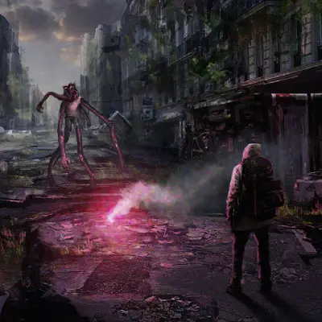

-

Histoire
Vous découvrirez ici les histoires de Ruptures, les rapports, journaux et témoignages audio des différentes personnes ayant foulé ce monde.
-

Espèces
Vous découvrirez ici les différentes créatures qui peuple le monde apocalyptique après que la Rupture ait finalement brisé l'espace entre les mondes.
-

Jeu de Rôle
Vous découvrirez ici tout l'essentiel pour pouvoir jouer au jeu de rôle Rupture, les règles de base, les espèces, et bien d'autres.